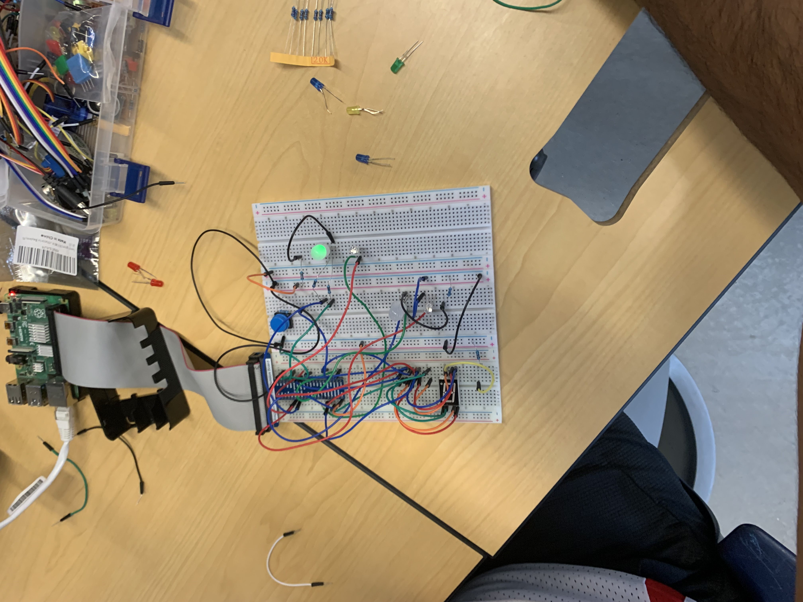

School Related Projects
This is the standard linked list (csce 121 in personal), a optimally implemented hashmap (csce 221 in personal), implementing the vector class using iterators (csce 221 in personal)
file transfer requests using FIFOS and UPD (csce 313 in personal), and implementing MIPS using verilog (ecen 350 in personal).
(More Important) Personal Github
School Github
Projects with a Raspberry Pi since 2020

- Created a buzzer to beep every time movement was detected
- Used servos to move small objects
- Set up a home server
- Csce 462 traffic light using Interupts and Polling Demo link Interupts
Demo link Polling
- Ongoing, using Logic Pro X Sampler for audio engineering on the PI, to make a drum machine given an .mp4 file Link to Logic Pro X Sampler